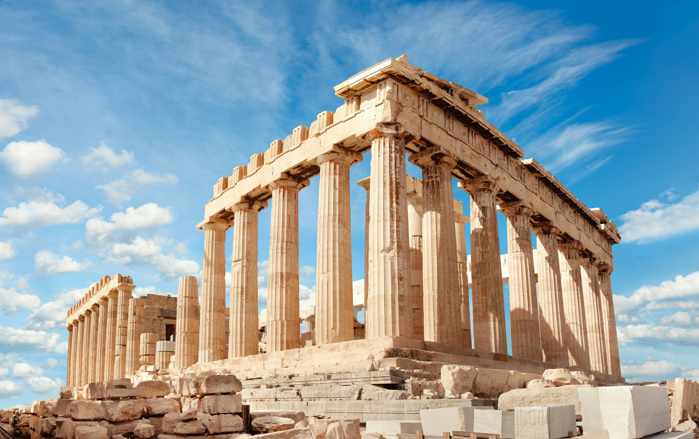
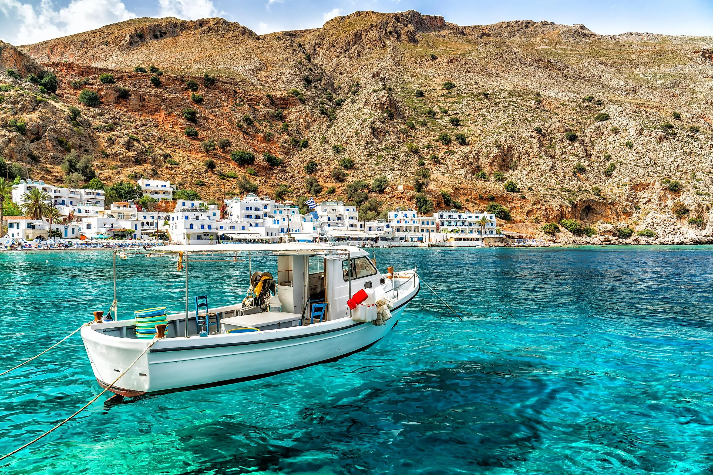

Day 1: Athens - History & Culture
Morning: Start your journey at the ancient Acropolis, where you can explore historical sites like the Parthenon and the Temple of Athena Nike.
Afternoon: Visit the Acropolis Museum for an in-depth history of Greek civilization. Then take a leisurely walk through Plaka – Athens’ charming old town.
Evening: End the day with dinner at a traditional Greek taverna with views of the Acropolis lit up at night.
See More AttractionsDay 2: Santorini - Sunsets & Beaches

Morning: Travel to Santorini, the famous island known for its blue domes and stunning caldera views. Begin your day with a visit to Oia for breathtaking views.
Afternoon: Enjoy a relaxing afternoon at the black sand beaches of Kamari or Perissa.
Evening: Don’t miss the world-famous Santorini Sunset – one of the most beautiful sunsets in the world!
More Hidden GemsDay 3: Crete - Adventure & Relaxation
Morning: Take a ferry to Crete and explore the Palace of Knossos, the largest archaeological site of the Minoan civilization.
Afternoon: Hike through the beautiful Samaria Gorge, a 16 km long canyon in Crete’s White Mountains.
Evening: End the day with a relaxing dinner by the seaside in Chania or Heraklion.
Explore Shopping Spots